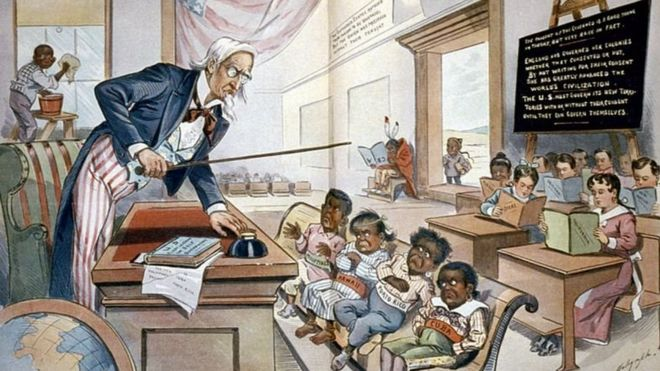

Pandora Papers: los 3 presidentes latinoamericanos (y los exmandatarios) que aparecen en la investigación sobre paraísos fiscales y riquezas ocultas

Shakira, Miguel Bosé, Julio Iglesias y otras celebridades que aparecen en la investigación de los Pandora Papers
Frances Haugen: la mujer que filtró los "Archivos de Facebook" revela su identidad

Cómo Estados Unidos luchó para convertirse en un imperio (y luego trató de ocultarlo)